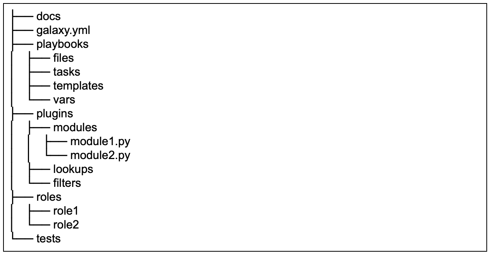

Getting Started With Ansible Content Collections
Getting Started With Ansible Content Collections
With the release of Red Hat Ansible Automation Platform, Ansible Content Collections are now fully supported. Ansible Content Collections, or collections, represent the new standard of distributing, maintaining and consuming automation. By combining multiple types of Ansible content (playbooks, roles, modules, and plugins), flexibility and scalability are greatly improved.
Who Benefits?
Everyone!
Traditionally, module creators have had to wait for their modules to be marked for inclusion in an upcoming Ansible release or had to add them to roles, which made consumption and management more difficult. By shipping modules within Ansible Content Collections along with pertinent roles and documentation, and removing the barrier to entry, creators are now able to move as fast as the demand for their creations. For a public cloud provider, this means new functionality of an existing service or a new service altogether, can be rolled out along with the ability to automate the new functionality.
For the automation consumer, this means that fresh content is continuously made available for consumption. Managing content in this manner also becomes easier as modules, plugins, roles, and docs are packaged and tagged with a collection version. Modules can be updated, renamed, improved upon; roles can be updated to reflect changes in module interaction; docs can be regenerated to reflect the edits and all are packaged and tagged together.
On top of this, before collections, it was not uncommon for modules to break or lack timely updates needed to interact with the services they were interfacing with. This often required Ansible users or Ansible Tower administrators to run multiple versions of Ansible in virtual environments in order to consume a patch that addressed a module issue. Ansible Content Collections bring stability and predictability by breaking modules out from the core distribution.
For automated organizations, this means that certified content is readily available to be applied to use-cases ripe for automation from day one.
Where to Find Collections
With the launch of Red Hat Ansible Automation Platform, Automation Hub will be the source for certified collections. Additionally, collections creators can also package and distribute content on Ansible Galaxy. Ultimately, it is up to the creator to decide the delivery mechanism for their content, with Automation Hub being the only source for Red Hat Certified Collections.
A Closer Look at Collections
An Ansible Content Collection can be described as a package format for Ansible content:

This format has a simple, predictable data structure, with a straightforward definition:
-
docs/: local documentation for the collection -
galaxy.yml: source data for the MANIFEST.json that will be part of the collection package -
playbooks/: playbooks reside here-
tasks/: this holds 'task list files' forinclude_tasks/import_tasksusage
-
-
plugins/: all ansible plugins and modules go here, each in its own subdir-
modules/: ansible modules -
lookups/: lookup plugins -
filters/: Jinja2 filter plugins -
connection/: connection plugins required if not using default
-
-
roles/: directory for ansible roles -
tests/: tests for the collection's content
More information regarding collection metadata
Interacting with Collections
In addition to downloading collections through the browser, the
ansible-galaxy command line utility has been updated to manage
collections, providing much of the same functionality as has always been
present to manage, create and consume roles. For example,
ansible-galaxy collection init can be used to create a starting
point for a new user created collection.

Along with the correct directory structure to start creating a collection from, this command also generates a metadata file that will be used while building the collection with namespace and collection name pre-populated:

Where to Go Next
Ansible Content Collections were first introduced as tech preview in Ansible Engine 2.8 and are now fully supported in Ansible Engine 2.9 and are an integral part of Red Hat Ansible Automation Platform. Collections allow Red Hat Ansible Automation Platform to offer certified, stable content in order to continue expanding use cases for automation. Future posts will dive deeper into developing new collections and converting existing roles into collections.